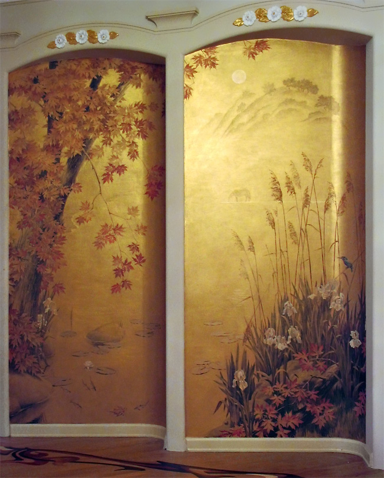
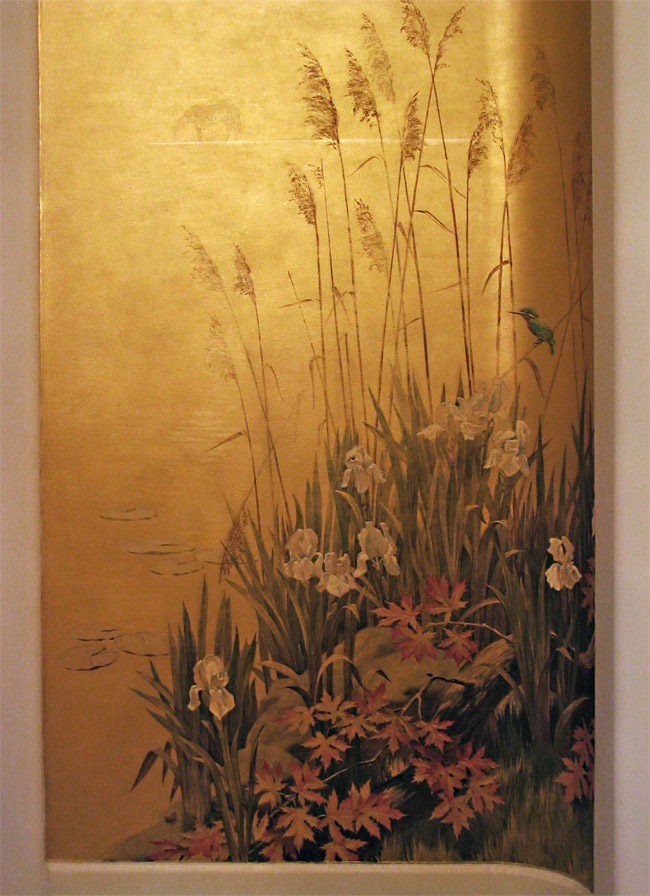
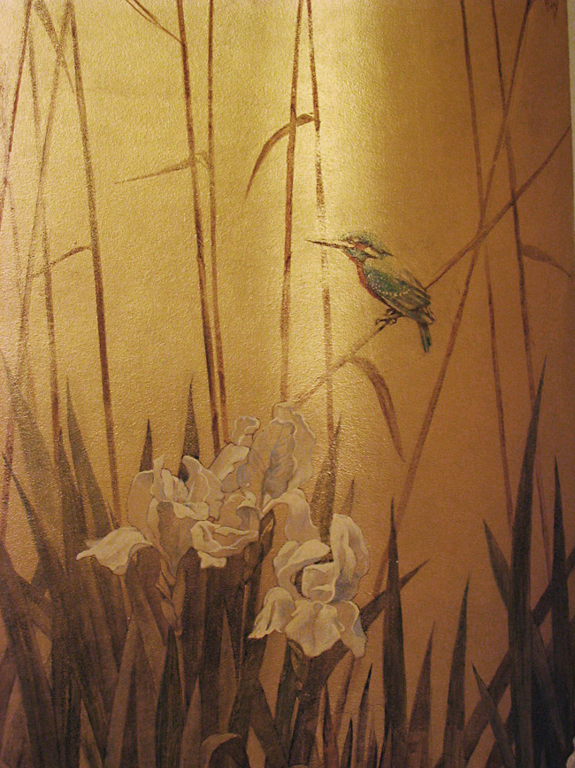
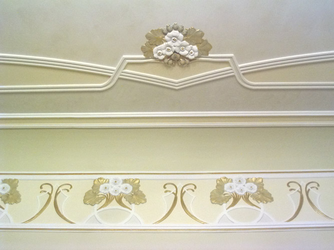
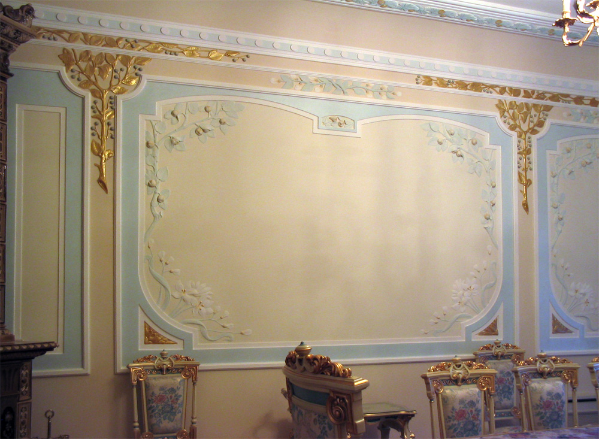
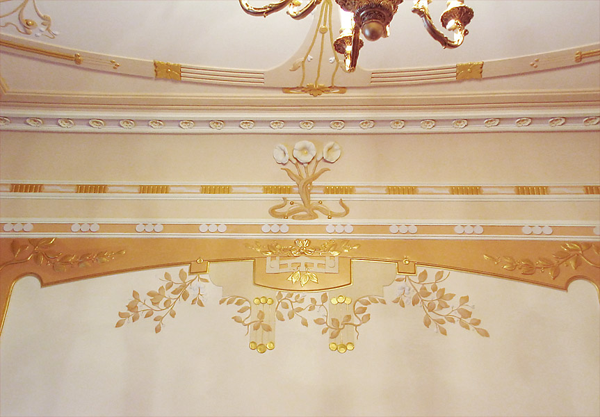
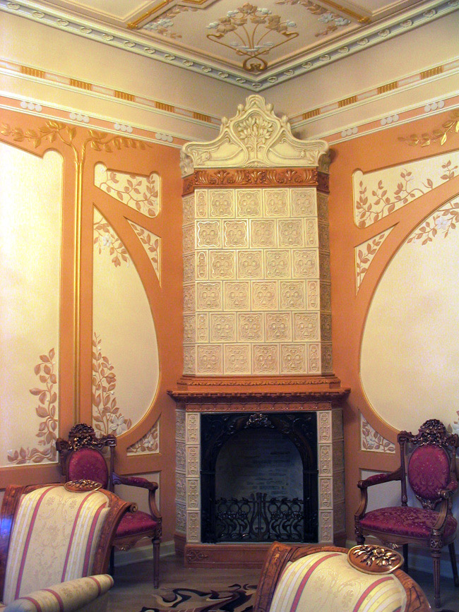

Interieur. Modern
Oorspronkelijk kreeg ik de opdracht om in dit interieur in te staan voor de kleur van de muren.
Ik stelde een meervoudige oplossing voor, die naast het verven van de muren en het inkleuren van het pleisterwerk ook een kleine muurschildering (8 m2) in gouden acriel omvatte.
Ik heb aan dit alles zeven maanden gewerkt. Ik heb hiervoor samengewerkt met de kunstenaars Valerij Vasiliev en Elena Solodjanikov.
We houden een warme herinnering over aan de charmante eigenares van dit huis.






